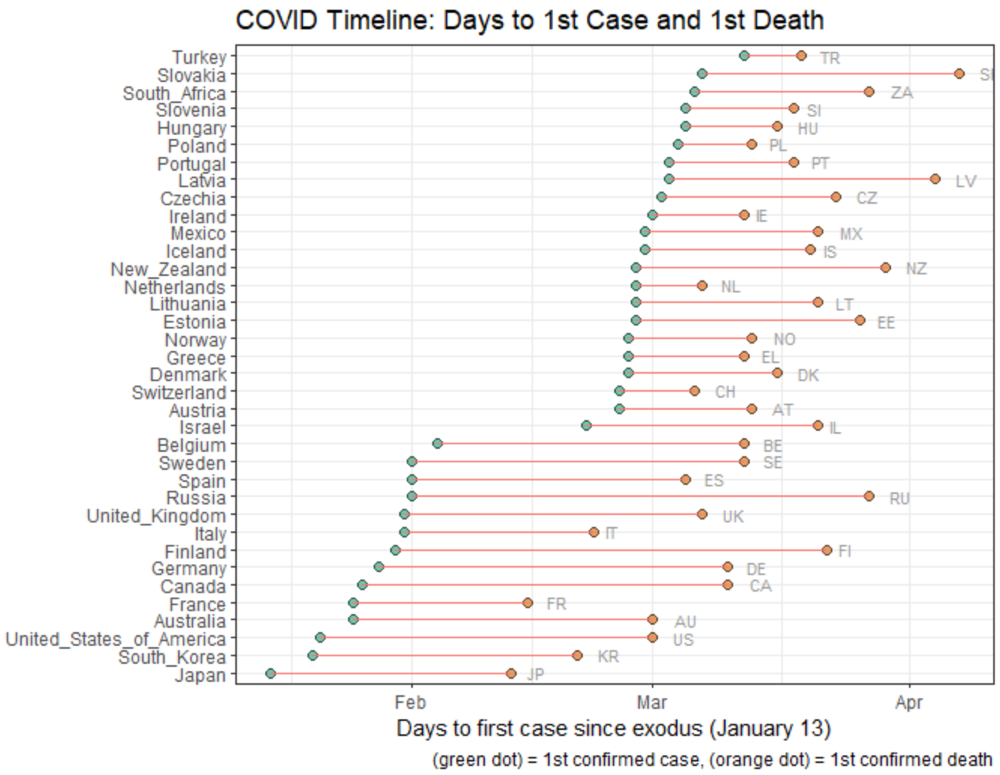

TL;DR
I gave a workshop on visualizing COVID-19 data in multiple countries, demonstrating how to 1) build interactive visualizations using plotly::ggplotly(), 2) compute relative timelines for each country and 3) plot sequence of key events for cross-country comparison. To structure the workshop and create the criteria of success/progress, I have broken down the session into three parts, each aimed at producing a graphic.
| Goal 1 | Goal 2 | Goal 3 |
|---|---|---|
| Timeseries with interactive highlights | Trajectories with relative timelines | Sequence of key epidemiological events |
 |
 |
 |
KEY LINKS
- https://github.com/andkov/vada-2020-summer-school - github repo created to accompany this workshop. Includes data and scripts.
- Visualizing the Pandemic - dynamic report narrating the workshop. (covers what did not fit into the video)

Learning Objectives
Recently I was invited to give a workshop at the 2020 Summer School event of the Visual and Automated Disease Analytic (VADA) graduate training program, which was held virtually this year due to COVID-19 pandemic.
Naturally, COVID-19 was featured prominently in the talks and took the center stage during the analytic session on Thursday, the last day of the summer school. My workshop was scheduled to open the workshop series, so I wanted to give the students some tools for visual exploration of longitudinal data. The target learning objectives aspired for participants to be able to:
- Plot time series of COVID-19 cases using
ggplot2package - Add interactive highlights to trajectories using
plotlypackage - Compute indicators for key epidemiological events in each country (e.g. day of the first death)
- Construct country-specific timelines relative to key epidemiological events
- Visualize the sequence of key events for a group of countries
Now you see why I used “aspired” instead of “intended”. No, I didn’t get to finish it all in under 60 minutes. However, I have anticipated this and created a narrated version fo the workshop which captured all demonstrations I wanted to go through. This dynamic report is best understood in the larger context of the https://github.com/andkov/vada-2020-summer-school repository, which I have created to offer a jump start for comparing COVID-19 trajectories across multiple geographies.